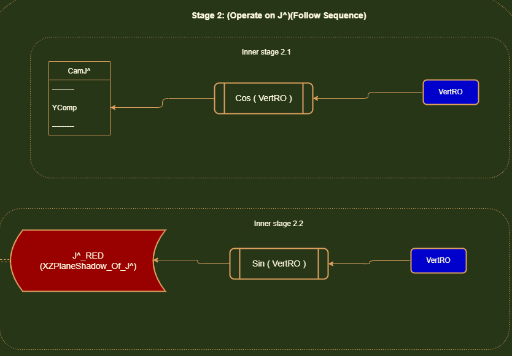

Update Cam Hats
This the part of our program that is responsible for calculating all the components of the CamHats and orienting them to the current orientation of the camera
The CamHats are linked to the camera's rotation bearing. As the camera rotates, the CamHats should rotate.
Ruff engine uses a 2 layer rotation system. Horizontal rotations and then vertical rotations. The order is important
here. For
sake of being concise, I will shorten the word Horizontal to 'Horz' and Vertical to 'Vert'. HorzRO is the horizontal
rotation orientation.
and VertRO is the vertical rotation orientation.
Usually in math, we are taught about rotation matrices for rotations on a particular axis. This gets complicated when we
mix different rotations (on different axis) together.
Horizontal Rotations
When we apply a horizontal rotation on the camera (On the XZ Plane), the camhats have to rotate, using J^ as the axis of rotation. So I^ and K^ shift
and after the rotations, they have new X and Z coordinates.
Vertical Rotations
When we apply a vertical rotation on the camera (On the XY Plane), the camhats have to rotate using I^ as the axis of rotation. So
J^ and K^ move to new positions and they have new Z and Y coordinates.
Combining Rotations
Problems arise when we need to combine different rotations. Because when we apply a horizontal rotation and then a vertical rotation.....we need to preserve
the current configuration of the CamHats when we do this.
If you consider a vanilla vertical rotation (with no horizontal rotation applied), you are just displacing J^ and K^ on the Z and Y axis.
But if the camera is under the influence of a horizontal rotation, and you apply a vertical rotation, you will actually displace J^ and K^ on the X, Y and Z axis.
Which is why we need a system that updates all the components of the unit vectors based on our 2 angles - Horizontal Rotation Orientation (HRO) and Vertical Rotation Orientation (VRO).
Even if we don't apply a horizontal rotation, we still need to factor in that angle of 0 HRO into our calculations.
This is something I struggled with for a while until I came up with a sequence.
Theory behind the sequence:
To develop a sequence, we need to look at the CamHats and break them down into sub components. Example: Look at I^ and break it down into 3 component vectors - X-Comp (X Component vector), Y-Comp (Y Component Vector) and Z-Comp
(Z component vector).
In this expanded view, ask yourself which of these components depend on ONLY ONE angle (Either HRO or VRO). If they move with a change in HRO, they would not move with a change in VRO.
These components are what need to be updated first.
Since we have arranged rotations in this order: Horz Rotations > Vert Rotations ; We must first identify which of these components depend only on the HRO.
Then we update those with the HRO. After we've done that, we identify all the components that depend ONLY on the VRO. Then we update those.
After we've done all that, you'll find that we have enough guidance available to acquire data about the components in our diagram which depend on both angles.
There is also another technique used here when combining rotations. And that is finding the displacements of displacements (subdividing displacements into further displacements). When you apply a horizontal rotation on a unit vector, you will acquire new component
vectors (displacements) of the rotated unit vector. To get the final positions of the unit vector after you have applied the VRO on them, you will need to rotate each displalcement by the VRO and then keep track of where it lands. These operations differ from regular unit vector rotations in that you are not using 1 as the unit length in your
trig calculations. You are using the lengths of those displacements instead.
The Sequence Explained
Stage 1: Our first job is to orient Cam I^ with HorzRO. It turns out that in our current rotation system (Horz > Vert),
The Y-component vector of Cam I^ never actually changes! It always is flat and parallel with the XZ Plane. No matter
what Horz angle
you put the cam in, when you pitch up and down, this Y-Component of Cam I^ never moves.
So we do not have to ever touch it. It's always 0.
We have to orient the X-Component vector and Z-Component vector of Cam I^ with HorzRO.
As you can see in the diagram on the right, when we rotate Cam I^ with the assigned HorzRO, it rotates left and then you
can track the displacement
on the X-axis and the Z-axis.
If we look at the HorzRO, we can see that the displacement on the X-axis is adjacent to the angle. So getting this
X-Component vector is simply
Cos(HorzRO).
And The Z-axis displacement is opposite the HorzRO. So The Z-axis displacement is Sin(HorzRO). This has a negative
polarity however because we are going
to the LEFT of the coordinate system (A left turn is considered a decrease in HorzRO and an right turn is considered an
increase in HorzRO).


Stage 2: Our next step is operate on Cam J^. Things get a little tricky here. If you can visualize the CamHats rotating
in all sorts of configurations of HorzRO and VertRO, you can see
how the X-Displacement and Z-Displacement of Cam J^ would be different based on how much you initially rotated the
CamHats system in your HorzRO stage. For instance.
If you applied a 0 HorzRO, and then got to this stage where you simply pitched the CamHats up and down (Vert
rotation)........Cam J^ would actually have no displacement on the X-axis. It would only displace
on the Y-axis and Z-axis. But if you applied a certain Horz rotation and then pitched up/down....you'd notice that there
would be a displacement on the X and Z axis based on how much your Horz rotation was. If you tracked the tip of J^
moving
in a CamHats pitch up/down rotation...you'd notice that it follows an angled path. And this path depends on how much you
initially rotated Horz.
If you look at the diagram below, you'll notice I've highlighted this path's shadow(projection) on the XZ Plane as a red
line. Notice that this red line
has a X-axis displacement and Z-axis displacement (it's component vectors). This red line represents how much distance
Cam J ^ has covered on the XZ plane when it starts to move away from the origin [0, 0, 0] during a pitch up/down
movement.
It's easy to see that the length of this red line would depend only on the VertRO. It's bearing however (which direction
it moves in) would be influenced by the HorzRO. Notice how Cam J^ is sitting at
the end of this red line.
If we can find this red line, we can get the X-axis and Z-axis displacements of Cam J^.
But how do we get this red line's length? We don't have a clear angle.
I guess since there is 90 degree angle between Cam J^(in its identity location),
we could subtract VertRO from 90.
Or a better approach would be to simply shift that red line UP! Just shift it up so that it becomes directly opposite
VertRO. Then we can get the length of the red line
with Sin(VertRO).
Now you might notice the yellow line I've drawn. This is the Y-axis displacement of Cam J^. Turns out that this does not
depend on the HorzRO. This ONLY depends on the VertRO.
No matter what HorzRO angle the CamHats system is placed in, this projection of Cam J^ on the Y-axis does not change and
it only gets affected by the VertRO.
So we can first orient the Y-axis component vector Cam J^ with the VertRO.
Once we get the length of the red line, we can use it in conjunction with the HorzRO to get the X-axis and Z-axis
displacements of Cam J^.
Notice how if HorzRO was 0, the red line would not follow any angled path. It would just move parallel to the Z-axis and
follow that. And if HorzRO was Pi/2 radians (90 degrees), it would be parallel with the X-axis.
Therefore we can consider HorzRO to use in conjunction with the red line.
Sin(HorzRO) = XDisp(X-axis displacement) / Red line.
So the X-axis displacement is: Sin(HorzRO) x Red Line.
Likewise, the Z-axis displacement is Cos(HorzRO) x Red Line.


Stage 3: Now we have to update K^. In our rotation system, the final position of K^ depends on both HRO and VRO. This is where our displacement subdivision technique comes in.
In order to find the final position of K^ after a horizontal AND vertical rotation is applied, we first have to ask ourselves what happens when you perform a horizontal rotation.
K^ is rotated and it gets displaced on the Z and X axis. It has Z and X component vectors. Now to track K's final position after the vertical rotation is applied, we must go within these existing displacements
and apply the vertical rotation to them.

We have to perform our regular SOH CAH TOA operations to get these displacements. But instead of using the unit vector length (1), we are using the existing length of these displacements.
The reason why this works is because when you apply a HRO rotation.....you will get a unique set of X and Z displacements. You can actually determine the HRO amount just by examining these displacements.
This is why this technique works. For a particular HRO rotation, you will get a unique displacement on each axis. And when you run that displacement through the VRO rotation, you will get the final position where K^ lands on that particular axis.
The final position is a combination of the initial HRO and subsequent VRO rotation.